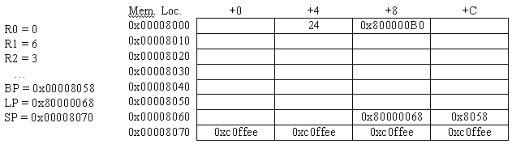

indicates problems that have been selected for discussion
in section, time permitting.
Consider the following implementation of an algorithm for
finding the greatest common divisor of two integers:
indicates problems that have been selected for discussion
in section, time permitting.
Consider the following implementation of an algorithm for
finding the greatest common divisor of two integers:
int gcd(int a,int b) {
if (a == b) return a;
if (a > b) return gcd(a-b,b);
return gcd(a,b-a);
}
The C compiler has compiled this procedure into the following code
for an unpipelined Beta processor:
gcd:
PUSH (LP)
PUSH (BP)
MOVE (SP, BP)
PUSH (R1)
PUSH (R2)
LD (BP, -12, R0)
LD (BP, -16, R1)
CMPEQ (R0, R1, R2)
BT (R2, L1)
CMPLE (R0, R1, R2)
BT (R2, L2)
PUSH (R1)
SUB (R0, R1, R2)
PUSH (R2)
BR (gcd, LP)
DEALLOCATE (2)
BR (L1)
L2:
SUB (R1, R0, R2)
PUSH (R2)
PUSH (R0)
BR (gcd, LP)
DEALLOCATE (2)
L1:
POP (R2)
POP (R1)
MOVE (BP, SP)
POP (BP)
POP (LP)
JMP (LP)

???
0x00000594
0x00001234
0x00000046
0x0000002A
0x0000000E
0x0000001C
0x00000594
0x0000124C
BP-->0x0000002A
0x0000000E
SP-->0x00001254
0x0000000E
What is the value of the second argument ("b") to the current call to gcd?
foo: PUSH (LP)
PUSH (BP)
MOVE (SP, BP)
PUSH (R1)
LD (BP, -12, R1)
B1: BNE (R1, cmp, R31)
B2: BR (rtn)
loop: SHLC (R1, 1, R1)
cmp: CMPLT (R1, R31, R0)
BF (R0, loop)
rtn: MOVE (R1, R0)
POP (R1)
POP (BP)
POP (LP)
JMP (LP)
CMOVE (1024, R0) PUSH (R0) CMOVE (-256, R0) PUSH (R0) BR (foo, LP) DEALLOCATE (2)
R0 = 0 Mem[0x1000] = 0x00001024
R1 = 0xbba00000 Mem[0x1004] = 0x000000e0
Mem[0x1008] = 0x00000001
Mem[0x100c] = 0x800000cc
. Mem[0x1010] = 0x00001004
. Mem[0x1014] = 0x00001000
. Mem[0x1018] = 0x00001774
Mem[0x101c] = 0x80000084
Mem[0x1020] = 0x00001014
BP = 0x00001024 Mem[0x1024] = 0x00001000
LP = 0x80000084 Mem[0x1028] = 0xafadcafe
SP = 0x00001028 Mem[0x102c] = 0xabadcafe
What is the value of the label foo?
int gcd(int x, int y)
{
if (x == y) return x;
if (y > x)
y = y - x;
else
x = x - y;
return gcd(x, y);
}
It compiles into the following Beta code:
gcd: PUSH (LP)
PUSH (BP)
MOVE (SP, BP)
PUSH (R1)
PUSH (R2)
LD (BP, -12, R1)
LD (BP, -16, R2)
CMPEQ (R2, R1, R0)
BF (R0, ifxgty)
MOVE (R1, R0)
BR (done)
ifxgty: CMPLE (R2, R1, R0)
BT (R0, else)
SUB (R2, R1, R2)
BR (call)
else: SUB (R1, R2, R1)
call: PUSH (R2)
PUSH (R1)
BR (gcd, LP)
DEALLOCATE (2)
done: POP (R2)
POP (R1)
POP (BP)
POP (LP)
JMP (LP)
Assume the function gcd is called with two positive non-zero arguments
while the stack pointer set to 0x8000 (i.e. it's two arguments are
placed in 0x8000, and 0x8004). Sometime thereafter, the Beta is
stopped and the contents of various memory locations and registers are
examined. Here is a summary of what is seen:

The contents of the blank table entries are unknown.
Mem. Loc. Contents Comments 0x8000 33 initial y 0x8004 24 initial x 0x8008 0x800000B0 main's return addr 0x800C unknown main's BP 0x8010 unknown main's R1 0x8014 unknown main's R2 ------------------------------------------ 0x8018 9 y 0x801C 24 x 0x8020 0x80000068 gcd's return addr 0x8024 0x8010 previous gcd's BP 0x8028 24 previous gcd's R1 0x802C 9 previous gcd's R2 ------------------------------------------ 0x8030 9 y 0x8034 15 x 0x8038 0x80000068 gcd's return addr 0x803C 0x8028 previous gcd's BP 0x8040 15 previous gcd's R1 0x8044 9 previous gcd's R2 ------------------------------------------ 0x8048 9 y 0x804C 6 x 0x8050 0x80000068 gcd's return addr 0x8054 0x8040 previous gcd's BP 0x8058 6 previous gcd's R1 0x805C 9 previous gcd's R2 ------------------------------------------ 0x8060 3 y 0x8064 6 x 0x8068 0x80000068 gcd's return addr 0x806C 0x8058 previous gcd's BP 0x8070 0xC0FFEE free 0x8074 0xC0FFEE free 0x8078 0xC0FFEE free 0x807C 0xC0FFEE free
int fib(int n)
{
if (n < 2) return n;
return fib(n-1) + fib(n-2);
}
| fib: PUSH (LP) | Entry.1 PUSH (BP) | Entry.2 MOVE (SP, BP) | Entry.3 PUSH (R1) | Entry.4 PUSH (R2) | Entry.5 LD (BP, -12, R2) CMPLEC (R2, 1, R0) BT (R0, L2) SUBC (R2, 1, R0) PUSH (R0) | Code.1 BR (fib, LP) | Code.2 DEALLOCATE (1) | Code.3 MOVE (R0, R1) | Code.4 SUBC (R2, 2, R0) | Code.5 PUSH (R0) | Code.6 BR (fib, LP) | Code.7 DEALLOCATE (1) | Code.8 ADD (R1, R0, R0) BR (L3) L2: MOVE (R2, R0) L3: POP (R2) | Return.1 POP (R1) | Return.2 POP (BP) | Return.3 POP (LP) | Return.4 JMP (LP) | Return.5 |
fib: ALLOCATE (4) ST (LP, -16, SP) ST (BP, -12, SP) ST (R1, -8, SP) ST (R2, -4, SP) ADDC (SP, -8, BP)Does the new code fragment perform the same function as the block that it replaces? Does it require more or fewer Beta instructions? Is the given sequence safe (could it be interrupted at any point and still operate correctly)? What are the advantages and disadvantages of this substitution?
L3: LD (SP, -16, LP)
LD (SP, -12, BP)
LD (SP, -8, R1)
LD (SP, -4, R2)
DEALLOCATE (4)
JMP (LP)
|
L3: DEALLOCATE (4)
LD (SP, 12, R2)
LD (SP, 8, R1)
LD (SP, 4, BP)
LD (SP, 0, LP)
JMP (LP)
|
L3: LD (SP, -4, R2)
LD (SP, -8, R1)
LD (SP, -12, BP)
LD (SP, -16, LP)
DEALLOCATE (4)
JMP (LP)
|
PUSH (R0) BR (fib, LP) MOVE (R0, R1) SUBC (R2, 2, R0) ST (R0, -4, SP) BR (fib, LP) DEALLOCATE (1)Is this resulting code faster? Safe?
LOAD(A) NEG LOAD(B) MUL LOAD(C) DIV STORE(D) A: LONG(123456) B: LONG(456789) C: LONG(234567) D: LONG(0)would compute -A*B/C and store the result in D. Note that the single-byte instruction NEG pops and negates its argument, pushing the result back onto the stack; DIV and MUL each pop two operands and push the result back onto the stack. Note that variables and constants are stored at arbitrary locations in main memory.
BR(skip)
aload: LONG(A)
bload: LONG(B)
cload: LONG(C)
dload: LONG(D)
skip: LDR(aload, R0) | Load address of a into R0
LD(R0,R0) | Load value of variable a into R0
LDR(bload, R1) | Load address of b into R1
LD(R1,R1) | Load value of variable b into R1
LDR(cload, R2) | Load address of c into R2
LD(R2,R2) | Load value of variable c into R2
LDR(dload, R3) | Load address of d into R3
SUB(R31,R0,R4) | calculate -A
MUL(R4,R1,R5) | calculate -A*B
DIV(R5,R2,R6) | calculate -A*B/C
ST(R6,R3) | write D back.
Since each instruction is 4 bytes long, and we have 16 instructions
(and embedded data), this takes up 64 bytes. This is over twice as
many bytes as the stack machine code.
LD(BP, 0, R0) | Load memory location value "A" in R0
LD(BP, 4, R1) | Load memory location value "B" in R1
LD(BP, 8, R2) | Load memory location value "C" in R2
MULC(R0, -1, R0) | Perform the -A operation
MUL(R0, R1, R1) | Perform the -A*B operation.
DIV(R1, R2, R2) | Perform the -A*B/C operation
ST(R2, 12, BP) | Store computation in memory location D
Now, the code is only 7 lines long, of 4 bytes/instruction => 28 bytes.
This is still more than the stack implementation, but less than part
B.
LOAD-SR Usage: LOAD-SR(literal), where literal is a one byte unsigned offset. PC = PC + 4 EA = Reg[SP] - 4*literal MEM[SP] = Mem[EA] Reg[SP] = Reg[SP] + 4The effective address EA is computed by subtracting from the stack pointer four times the 8-bit displacement literal. The location in memory specified by EA is read and then pushed onto the stack. We use an unsigned format because we don't need to represent both positive and negative offsets.
STORE-SR Usage: STORE-SR(literal), where literal is a one byte unsigned offset. PC = PC + 4 EA = Reg[SP] - 4*literal MEM[EA] = MEM[SP-4] Reg[SP] = Reg[SP] - 4The effective address EA is computed by subtracting from the stack pointer four times the 8-bit displacement literal. The top element of the stack is popped off and written into the effective address.
LOAD-SR(4) | push a onto the top of the stack. (note, this changes how
| far away b,c, and d are!)
NEG
LOAD-SR(4) | bring b to the top of the stack
MUL
LOAD-SR(3) | bring c to the top of the stack
DIV
STORE-SR(2) | write d back to its original place on the stack.
This code now takes 11 bytes. Notice how it is somewhat troublesome to
keep track of where variables are at every point in time. This is why
we typically use a BP register; it simplifies coding sequences like
this tremendously by providing a fixed reference position.
ALLOCATE: Usage: ALLOCATE <1 byte unsigned literal, the # of words to allocate> SP = SP + 4*literal PC = PC+4 DEALLOCATE: Usage: DEALLOCATE <1 byte unsigned literal, the # of words to deallocate> SP = SP - 4*literal PC = PC +4Note: we used unsigned literals since we don't need to represent both positive #s AND negative #'s, and we can get twice the range by using unsigned numbers. It would be acceptable if the argument to allocate/deallocate was taken from the stack, rather than an argument.
CALL: Usage: CALL <4 byte absolute (unsigned) address> Mem[SP] = PC + 4 SP = SP + 4 PC = absolute addressIt would also be acceptable if the call had no argument and took the address from the stack.
RETURN: Usage: RETURN SP = SP - 4 PC = Mem[SP]
int F(int a, int b)
{ int x;
x = a*b;
return (x + x*b)
}
...
z = F(23, 41);
...
The natural place to return the value of the procedure is on the
stack, but it is awkward to allocate this location in the caller
because it blocks access to the return value. How does your proposed
convention deal with this problem?
argn argn-1 arg1 return location return value local argn local argn-1 local arg1 temporaries
LOAD(ARGn) LOAD(ARGn-1) ... LOAD(ARG1) ALLOCATE(1) | Allocate space for return value CALL(callee) | using our instruction above DEALLOCATE(1) | Get rid of the return value DEALLOCATE(n) | Get rid of argumentsIn our case:
LOADC(41) | arguments in reverse order LOADC(23) ALLOCATE(1) CALL(F) DEALLOCATE(1) DEALLOCATE(2) | these could be merged into one but are separated for clarity.
ALLOCATE(m) | Allocate space for local variables <insert useful code here, including a STORE-SR to put the correct value into the space on the stack reserved for the return value.> DEALLOCATE(m) | Deallocate local variables RETURNThis is somewhat unpleasant, due to the fact that every time we do almost anything, we change the value of the stack pointer (since every operation modifies the stack in some way), which changes the offsets for the variables. Drawing a careful diagram of the stack while working this problem is essential.
F:
ALLOCATE(1) | reserve room for x
LOAD-SR(4) | fetch a
LOAD-SR(6) | fetch b
MUL
STORE-SR(2) | write a*b into x
LOAD-SR(1) | load X again
LOAD-SR(6) | load b
MUL
LOAD-SR(2) | load X again
ADD
STORE-SR(4) | write the return value
DEALLOCATE(1) | get rid of our local variable X
RETURN
We see from this example the value of a BP register.